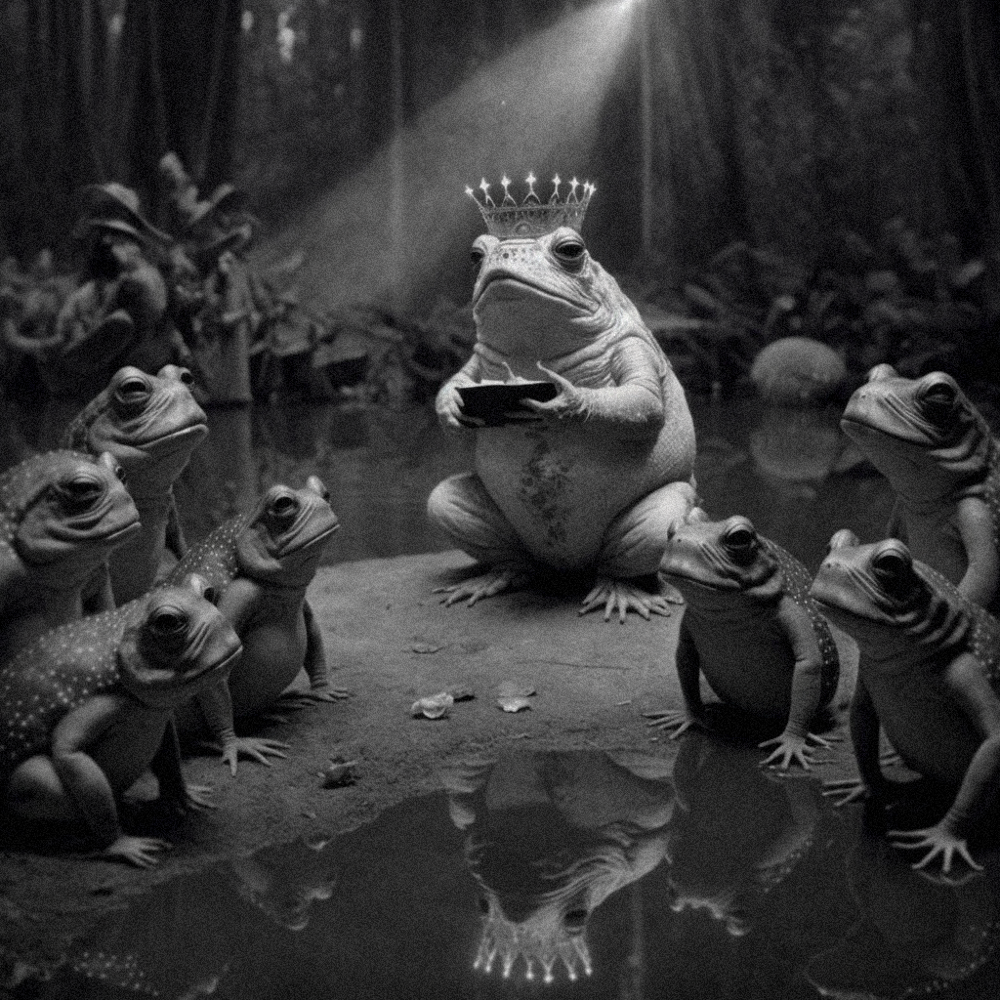
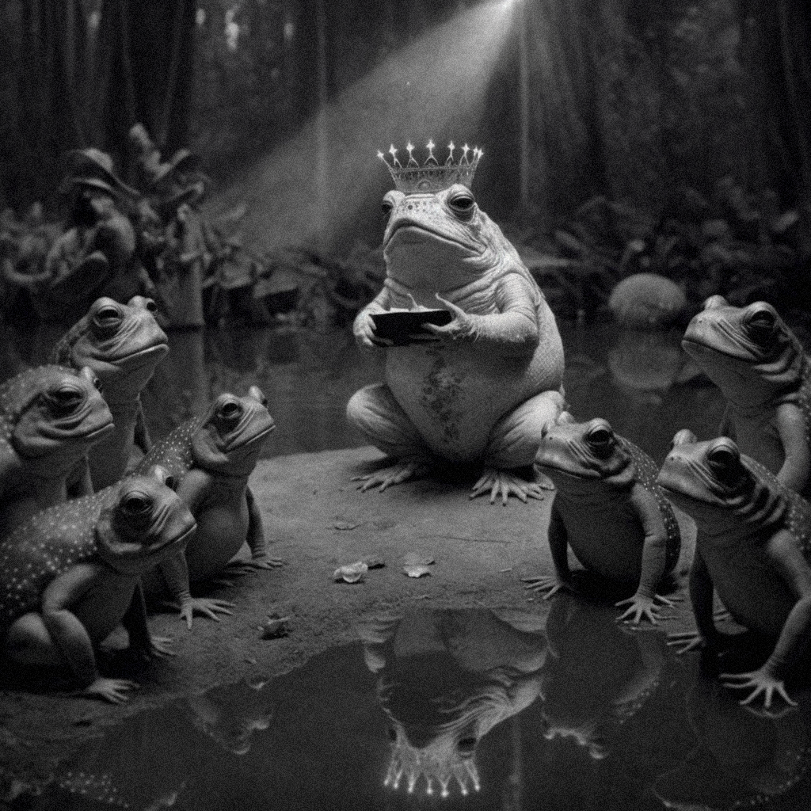

FALLEN SKIES (2022):
for solo piano and electronics
written for Julia Den Boer
audio:
Daniel Walden, piano
studio recording, Cambridge MA, 2022/12/15
recorded, mixed, and mastered by me; John Pax, recording asst.
++++
Wise Toad says:
Wär nicht das Auge sonnenhaft,
Die Sonne könnt es nie erblicken;
Läg nicht in uns des Gottes eigne Kraft,
Wie könnt uns Göttliches entzücken?
Were the Eye not Sun-like,
It could never behold the Sun;
Were God's own Might not within us,
How could the Divine delight us?
Goethe, J. W., Gedichte. Ausgabe letzter Hand.1827, Zahme Xenien, Kap. 3
 

++++